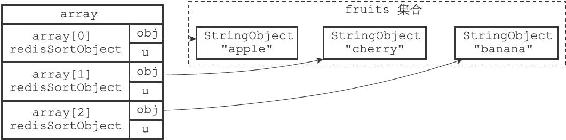
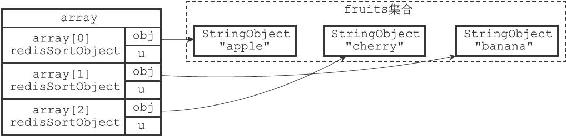

21.2 ALPHA选项的实现
通过使用ALPHA选项，SORT命令可以对包含字符串值的键进行排序：
SORT
ALPHA
以下命令展示了如何使用SORT命令对一个包含三个字符串值的集合键进行排序：
redis> SADD fruits apple banana cherry
(integer) 3
#
元素在集合中是乱序存放的
redis> SMEMBERS fruits
1) "apple"
2) "cherry"
3) "banana"
#
对fruits
键进行字符串排序
redis> SORT fruits ALPHA
1) "apple"
2) "banana"
3) "cherry"
服务器执行SORT fruits ALPHA命令的详细步骤如下：
1）创建一个redisSortObject结构数组，数组的长度等于fruits集合的大小。
2）遍历数组，将各个数组项的obj指针分别指向fruits集合的各个元素，如图21-5所示。
3）根据obj指针所指向的集合元素，对数组进行字符串排序，排序后的数组项按集合元素的字符串值从小到大排列：因为"apple"、"banana"、"cherry"三个字符串的大小顺序为"apple"<"banana"<"cherry"，所以排序后数组的第一项指向"apple"元素，第二项指向"banana"元素，第三项指向"cherry"元素，如图21-6所示。
4）遍历数组，依次将数组项的obj指针所指向的元素返回给客户端。
其他SORT

图21-5 将obj指针指向集合的各个元素

图21-6 按集合元素进行排序后的数组